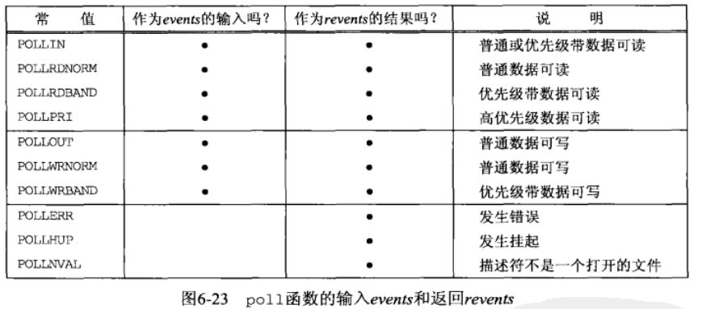

描述符就绪的条件：
读就绪：
写就绪：
select
int select(int maxfd, fd_set *readset, fd_set *writeset, fd_set *exceptedset, struct timeval *timeout):
#include<sys/types.h>
#include<sys/time.h>
void FD_ZERO(fd_set *fdset)； //将fd_set初始化为空集合
void FD_CLR(int fd, fd_set *fdset); //清除由参数fd传递的文件描述符
void FD_SET(int fd, fd_set *fdset); //设置由参数fd传递的文件描述符
int FD_ISSET(int fd, fd_set *fdset); //判断fd指向的文件描述符是否是由fdset指向的fd_set中的一个元素，如果是则返回非零值，用于验证select的调用结果
所以，仅向操作系统传递1次监视对象，监视范围或内容发生变化时只通知发生变化的事项，linux支持epoll，windows支持IOCP
poll
struct pollfd{
int fd; // 文件描述符
short events; // 要求查询的事件掩码
short revents; // 返回的事件掩码
}

epoll：
select中为了保存监视对象文件描述符，直接声明了fd_set变量，但epoll方式下由操作系统负责保存监视对象文件描述符，因此需要向操作系统请求创建保存文件描述符的空间，此时使用的是epoll_create;为了添加和删除监视对象文件描述符，select需要FD_SET等函数，epoll中通过epoll_ctl完成；select中使用select等待文件描述符的变化，而eopll中调用epoll_wait函数；select中通过fd_set查看监视对象的状态变化，而epoll下通过epoll_event将发生变化的文件描述符单独集中到一起
struct epoll_event{
__uint32_t events;
epoll_data_t data;//
}
其中，events取值：
* EPOLLIN：表示对应的文件描述符可以读，包括对端socket的正常关闭
* EPOLLOUT：输出缓冲为空，表示对应的文件描述符可以写
* EPOLLPRI：表示对应的文件描述符有紧急数据可读
* EPOLLHUP：表示对应的文件描述符被关闭
* EPOLLRDHUP：断开连接或半关闭的情况
* EPOLLERR：表示对应的文件描述符发生错误的情况
* EPOLLLET：将对应的文件描述符设置为以边缘触发的方式
* EPOLLONESHOT：只监听一次，发生一次事件通知后，相应文件描述符不再接收到事件通知。因此需要向epoll_ctl函数的第二个参数传递EPOLL_CTL_MOD,再次设置事件
typedef union epoll_data_t{
void* ptr;
int fd;
__uint32_t u32;
__uint64_t u64;
}
int epoll_wait(int epfd, struct epoll_event* events, int maxevents, int timeout):等待文件描述符发生变化；相当于select模式中的select
条件触发和边缘触发：区别在与发生事件的时间点
IO复用优缺点分析：